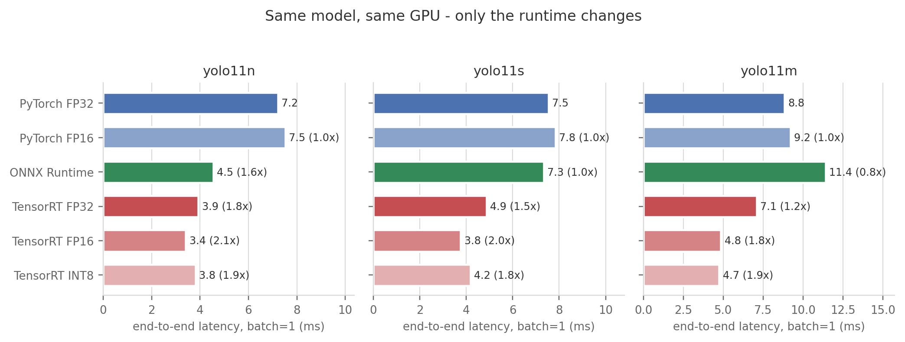
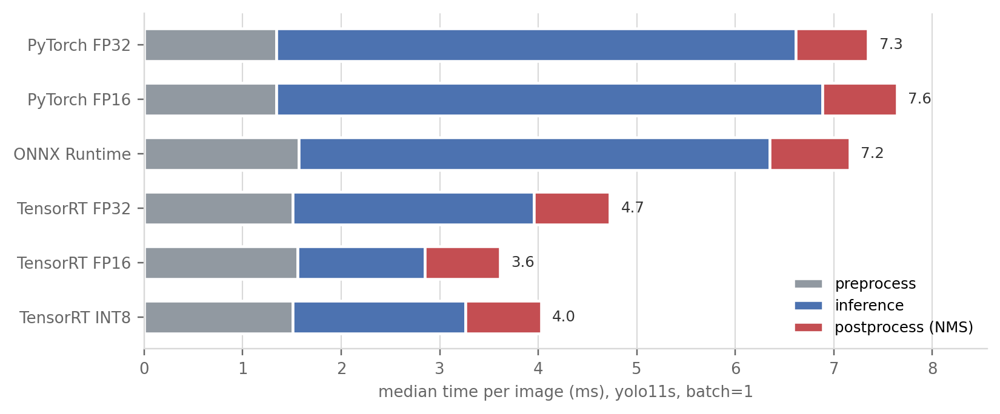
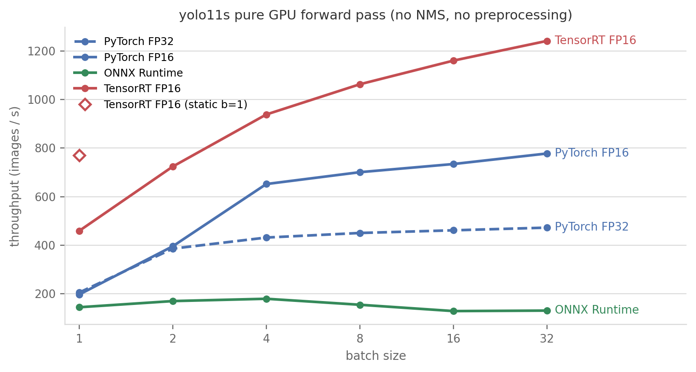
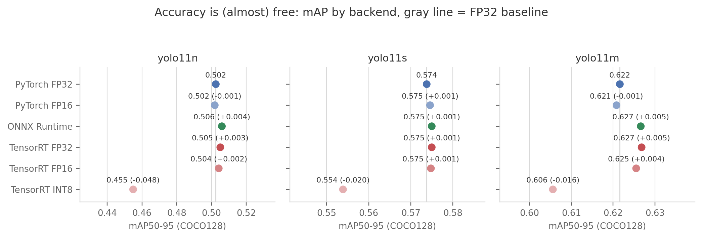
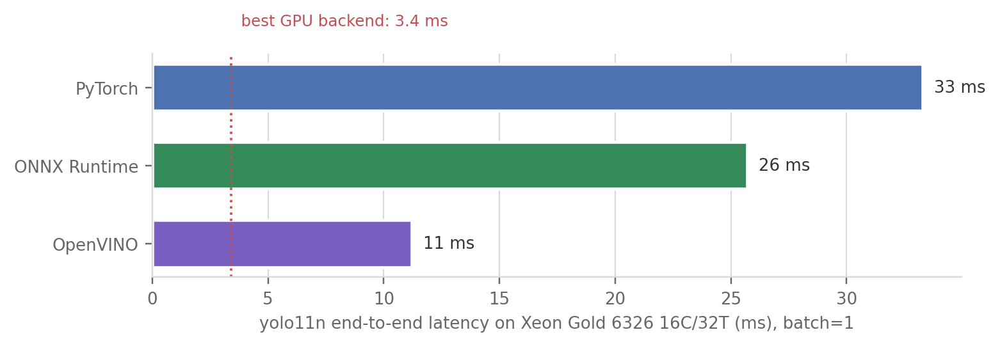

TL;DR. Same YOLO11 weights, same RTX A5000, six ways to run them. Scored on time, accuracy, and adoption cost against the original
model.predict()on the.ptfile: TensorRT FP16 is the clear winner — ~2× lower end-to-end latency (7.5 → 3.8 ms for yolo11s), 4–5× faster on the network itself (5.3 → 1.3 ms), 2.6× higher batched throughput (472 → 1241 img/s), zero accuracy loss, for a one-time ~90 s engine build that is locked to this GPU model and TensorRT version. Four honest surprises: PyTorch’shalf=Truedoes nothing at batch 1 (it pays only at batch ≥ 4); TensorRT INT8 is strictly dominated by FP16 on the n/s models (slower and −0.02 to −0.05 mAP); ONNX Runtime helps the nano but is slower than plain PyTorch on the medium; and a dynamic-batch engine costs 1.7× at batch 1 vs a static one. Once TensorRT shrinks inference to 1.3 ms, preprocessing + NMS are two-thirds of every frame — the next milliseconds live outside the network.
The question
You trained (or just downloaded) a YOLO model. You call model.predict() and it feels fast — a few milliseconds on a decent GPU. Most people stop there.
But the weights and the runtime that executes them are two different choices, and the second one is a knob that costs no retraining and no new data. The same yolo11s.pt can be executed by PyTorch eager mode, by ONNX Runtime, or compiled into a TensorRT engine at FP32, FP16, or INT8. Vendor benchmarks promise big multipliers at the fast end of that list. This post measures the whole menu, holding everything else fixed, and scores every strategy on three axes against the original:
- Time — batch-1 latency and batched throughput.
- Accuracy — does mAP survive the trip?
- Adoption cost — what the strategy demands: code changes, new dependencies, build time, calibration data, and what you give up in portability.
The contenders
| Strategy | What it is | Why it should be fast |
|---|---|---|
| PyTorch FP32 | model.predict() on the .pt — the original |
baseline: eager kernels, full precision |
| PyTorch FP16 | same call, half=True |
half precision on tensor cores; one flag |
| ONNX Runtime (CUDA) | graph exported to .onnx, run by ORT’s CUDA provider |
graph-level fusion + optimized kernels |
| TensorRT FP32 | ONNX further compiled into a GPU-specific .engine |
kernel auto-tuning for this exact GPU |
| TensorRT FP16 | same, half precision | fusion + tensor cores |
| TensorRT INT8 | same, 8-bit, calibrated on sample images | 8-bit tensor cores, least memory traffic |
The mental model: PyTorch executes the network op by op, each op a separate pre-compiled CUDA kernel launch. ONNX Runtime first rewrites the graph (folds constants, fuses adjacent ops) and then executes it. TensorRT goes furthest: it compiles the graph offline for one specific GPU, trying multiple kernel implementations per layer and keeping the fastest, at a chosen precision. The further right you go, the more build-time work, the less portability — and, usually, the more speed.
The entire code delta between these strategies, thanks to ultralytics wrapping every backend behind one API:
from ultralytics import YOLO
model = YOLO("yolo11s.pt") # the original
model.predict(img, half=True) # strategy: FP16, one flag
model.export(format="onnx") # strategy: ONNX, one-time export
model.export(format="engine", half=True) # strategy: TensorRT FP16
model.export(format="engine", int8=True,
data="coco128.yaml") # strategy: INT8 (needs calib images)
YOLO("yolo11s.engine").predict(img) # inference code: unchangedThe setup
- Hardware: one NVIDIA RTX A5000 (24 GB, Ampere) in our lab server; Xeon Gold 6326 (16C/32T) for the CPU section.
- Software: Python 3.11, torch 2.8.0+cu126, ultralytics 8.4.92, TensorRT 11.1 (cu12 build), onnxruntime-gpu 1.24.4, OpenVINO 2026.2. Driver CUDA 12.4.
- Models: YOLO11 n / s / m, COCO-pretrained, 640×640 throughout.
- Latency protocol:
model.predict()on a pre-loaded image (ultralytics’bus.jpg; disk I/O excluded), 30 warmup + 200 timed calls, batch = 1. I report medians, and use ultralytics’ own per-stage timers for the preprocess / inference / postprocess split. - Throughput protocol: pure forward pass on a resident CUDA tensor with explicit
torch.cuda.synchronize()— no image decode, no NMS — to isolate what the runtime actually accelerates. - Accuracy protocol: mAP50-95 on COCO128 for every backend of every model.
- Fairness rule: every backend gets ultralytics’ defaults — no per-backend tuning for anyone. All detectors returned the same 5 detections on the test image, INT8 included.
Axis 1a: batch-1 latency

predict() latency (preprocess + inference + postprocess), batch = 1, 640×640, 200 timed iterations on an RTX A5000. Bars are colored by runtime family (blue = PyTorch, green = ONNX Runtime, red = TensorRT; lighter = lower precision); annotations give the speedup over PyTorch FP32. TensorRT FP16 roughly halves latency for every model size. Note PyTorch FP16 ≈ FP32 (the flag does nothing here) and ONNX Runtime losing to PyTorch on yolo11m.The same data for yolo11s, with the inference-only time that the runtimes actually compete on:
| yolo11s, batch=1 | end-to-end (ms) | vs original | inference only (ms) | vs original |
|---|---|---|---|---|
| PyTorch FP32 (original) | 7.54 | 1.0× | 5.27 | 1.0× |
| PyTorch FP16 | 7.84 | 0.96× | 5.54 | 0.95× |
| ONNX Runtime | 7.33 | 1.03× | 4.78 | 1.10× |
| TensorRT FP32 | 4.87 | 1.55× | 2.45 | 2.15× |
| TensorRT FP16 | 3.76 | 2.0× | 1.30 | 4.1× |
| TensorRT INT8 | 4.18 | 1.8× | 1.75 | 3.0× |
Three findings that vendor decks won’t show you:
half=Trueis a placebo at batch 1. On all three models, PyTorch FP16 is marginally slower than FP32 (7.8 vs 7.5 ms on yolo11s). At batch 1 the GPU is nowhere near saturated — the time goes to kernel launches, not kernel math — so halving the math changes nothing, and the input/output casts add a little. Hold this thought until the batching section, where the same flag becomes a 1.6× win.- INT8 is slower than FP16 for yolo11n and yolo11s (3.82 vs 3.41, 4.18 vs 3.76 ms), and only reaches parity on yolo11m (4.73 vs 4.85 ms). TensorRT 11 quantizes via explicit quantize/dequantize nodes, and for small networks at 640 px their overhead eats the 8-bit savings on Ampere. “INT8 = fastest” is not a law; it’s a hypothesis to test on your model, your GPU.
- ONNX Runtime’s value depends on model size: 1.6× on the nano, a wash on the small, 0.8× (slower than the original!) on the medium. Its CUDA kernels beat eager PyTorch on launch-bound tiny models but lose on compute-bound bigger ones.
And the headline I did not expect when I started: yolo11m on TensorRT FP16 (4.85 ms) is faster end-to-end than yolo11n on vanilla PyTorch (7.22 ms) — while scoring +0.12 mAP50-95. The runtime choice outweighs two model-size steps. If you picked the nano because the small felt too slow, you may have paid accuracy for speed that a one-line export would have bought for free.
Where the milliseconds actually go

This is Amdahl’s law with a bounding box. TensorRT FP16 makes the network 4.1× faster, but the predict() call only gets 2.0× faster, because ~2.2 ms of every frame is spent outside the network — resizing and normalizing the image, and running NMS on the raw predictions. Once inference costs 1.3 ms, the model is no longer the bottleneck; the pipeline is.
Two practical corollaries:
- Below ~4 ms of end-to-end budget, further model optimization (INT8, pruning, a smaller model) buys almost nothing. The next wins are pipeline wins: GPU-side preprocessing (e.g. DALI), batching the NMS, or exporting with NMS fused into the engine (
nms=True). - This is why “up to N× faster” claims and your stopwatch disagree: the N× is the blue segment, your stopwatch times the whole bar.
Axis 1b: throughput, and PyTorch FP16’s redemption
Batch-1 latency is the streaming-camera number. If you are chewing through a folder of images or a recorded video, what matters is images per second at the best batch size — so here is the pure GPU forward pass (no NMS, no preprocessing) for yolo11s, batch 1 → 32:

| yolo11s, pure forward | batch 1 | batch 32 (peak) |
|---|---|---|
| PyTorch FP32 (original) | 205 img/s | 472 img/s |
| PyTorch FP16 | 197 img/s | 778 img/s |
| ONNX Runtime (dynamic) | 145 img/s | 131 img/s (peak 180 @ b4) |
| TensorRT FP16 (dynamic) | 459 img/s | 1241 img/s |
| TensorRT FP16 (static b=1) | 771 img/s | — |
- The
half=Truestory completes: useless at batch 1, +65% at batch 32. FP16 needs saturation to matter. If you serve single frames, skip the flag; if you batch, take it — it’s still free. - Shape flexibility has a price. The dynamic-batch TensorRT engine does 459 img/s at batch 1; a static batch-1 engine of the same model at the same precision does 771 img/s — 1.7×. TensorRT tunes kernels for the shapes you promise it; promise less, get more. If your batch size is fixed in production, build a static engine for exactly that shape.
- ONNX Runtime collapses on the dynamic graph — throughput falls as batch grows (180 → 131 img/s), 9.5× behind TensorRT at batch 32. With static shapes (the batch-1 latency test above) it behaves; dynamic shapes are its unhappy path, at least with default session options. A tuned ORT setup (IO binding, its own TensorRT execution provider) would close some of this gap — but “needs tuning” is itself an adoption cost, and everyone here got defaults.
Axis 2: does the fast path cost accuracy?

(COCO128 is a 128-image slice of COCO train, so the absolute values are optimistic; what matters here is the relative drop across backends of identical weights — which is exactly what precision changes affect.)
- FP16 is free. Across all three models and both FP16 backends, mAP moves by at most ±0.005 — noise. Combined with the speed results: there is no accuracy reason to ever run TensorRT at FP32 for these models.
- INT8’s tax is real and biggest where you’d want it most. The nano loses 0.048 mAP50-95 (~10% relative). Small models have less redundancy to absorb quantization error. Put together with Axis 1 — INT8 was also slower than FP16 on n/s — and the verdict on this GPU is blunt: TensorRT INT8 is strictly dominated by TensorRT FP16 for yolo11n/s: slower AND less accurate. For yolo11m it buys 0.1 ms for 0.016 mAP — still a bad trade in most settings. (A larger, more careful calibration set than my 128 train images would likely shrink the mAP gap somewhat; it cannot fix “not faster.”)
Axis 3: what adopting each strategy actually takes
Speed and accuracy tell you what you get. Here is what each strategy demands — the axis that never makes it into benchmark charts. Build times and artifact sizes are measured (exports.json), for yolo11s:
| Strategy | Code change | New dependencies | One-time build | Artifact | Runs on | Accuracy risk | Payoff (e2e / peak throughput) |
|---|---|---|---|---|---|---|---|
| PyTorch FP32 (original) | — | — | — | 19 MB .pt |
anywhere PyTorch runs | — | 1.0× / 472 img/s |
| PyTorch FP16 | half=True |
none | none | same .pt |
any modern NVIDIA GPU | none (±0.001) | 1.0× / 778 img/s |
| ONNX Runtime | 1-line export, once | onnx, onnxslim, onnxruntime-gpu |
~1–2 s | 38 MB .onnx |
~any platform with an ORT build | none | 1.0–1.6× / 180 img/s |
| TensorRT FP32 | 1-line export, once | tensorrt-cu12 (+nvidia-modelopt) |
83 s | 46 MB .engine |
this GPU model + this TRT version only | none | 1.5× / — |
| TensorRT FP16 | 1-line export, once | same | 90 s (159 s dynamic) | 22 MB .engine |
same lock-in | none | 2.0× / 1241 img/s |
| TensorRT INT8 | export + calibration images | same | 146 s | 15 MB .engine |
same lock-in | −0.02 to −0.05 mAP | 1.8× (≤ FP16) |
| OpenVINO (CPU) | 1-line export, once | openvino |
4 s | 11 MB dir | any x86 CPU | not re-measured here | 3.0× vs PyTorch CPU |
The non-obvious costs, in words:
- The
.enginefile is a compilation artifact, not a model. It is specific to the GPU architecture it was built on and the TensorRT major version that built it. New GPU model → rebuild. TensorRT upgrade → rebuild. Ship to a fleet of mixed GPUs → one build per GPU type. The ~90 s is per model × per precision × per shape profile × per GPU type. (My full 10-engine build for this post: ~21 GPU-minutes.) - INT8 additionally demands data — representative calibration images. That’s a small pipeline to maintain, and a silent way to go stale as your deployment domain drifts.
- ONNX is the portability sweet spot: a 2-second export to an artifact that runs on NVIDIA, CPUs, mobile — but as Axis 1 showed, on this GPU its speed is only worth it for small models.
The install log they don’t show you (mid-2026 edition). Getting the fast lane running on a CUDA 12.4-driver machine took four non-obvious fixes, each failing late and cryptically:
pip install tensorrtnow silently resolves to CUDA-13 wheels that an R550 driver cannot load — you wanttensorrt-cu12.- TensorRT ≥ 11 removed implicit quantization, so ultralytics builds FP16/INT8 engines through
nvidia-modelopt— which it auto-installs by shelling out to pip… which doesn’t exist in auvvenv by default. - modelopt requires torch ≥ 2.8 and will happily drag in a
+cu130torch your driver can’t use; pintorch==2.8.0 torchvision==0.23.0from the cu126 index, last. - onnxruntime-gpu finds cuDNN via
LD_LIBRARY_PATH; when it doesn’t, it silently falls back to CPU while still listing CUDA as available — verify withsession.get_providers()after creating a real session, never withget_available_providers().
None of this is hard once you know it; all of it is part of the true cost of the fast lane. The working recipe is in setup_env.sh.
No GPU? The CPU story, briefly
Same protocol, yolo11n on the host Xeon (PyTorch capped at 8 threads by ultralytics’ default; ORT and OpenVINO manage their own pools):

The ordering repeats, amplified: the vendor-optimized runtime (Intel’s OpenVINO, on an Intel CPU) is 3× faster than eager PyTorch — from a 4-second export. A 30 fps nano detector on a plain Xeon is entirely practical; and if your “GPU plan” was PyTorch eager on a nano, know that a well-run CPU gets within 1.6× of it.
What I’d actually do
Decision rules from these numbers:
- Streaming, single camera, NVIDIA GPU → TensorRT FP16, static engine at your exact shape. 2× end-to-end now, and your next win is pipeline work (fused NMS, GPU preprocessing), not more model compression.
- Offline / batched processing → TensorRT FP16 dynamic engine at batch ≥ 16 (2.6× throughput). Can’t take the TensorRT dependency?
half=True+ batching gets you 62% of its throughput for literally zero effort. - Must run on heterogeneous / unknown hardware → ONNX. Portability is its product; treat any GPU speedup as a bonus, and benchmark per model size — it can be slower than PyTorch (yolo11m here).
- CPU-only → OpenVINO, no contest (3× over PyTorch).
- INT8 → only after FP16 is proven insufficient, only with a real calibration set, and only if measurement on your GPU + model shows it winning. Here it lost to FP16 on both axes for two of three models.
- Whatever you pick: re-run a val set through the exported artifact (one
model.val()call) before shipping. Accuracy surviving the export is an empirical claim, not a guarantee.
Caveats
- One GPU, one architecture. A5000 = Ampere. On Ada/Hopper/Blackwell the FP8/INT8 tensor-core story is different and INT8 may well win where it lost here. The method transfers; the verdicts are per-GPU.
- One test image for latency. NMS time depends on how many boxes a scene produces;
bus.jpg(5 detections) is easy. Crowded scenes shift the postprocess share up — strengthening, not weakening, the Amdahl point. - COCO128 for accuracy is 128 training images: inflated absolute mAP, small sample. Fine for backend-relative deltas; do not quote the absolute values. A proper COCO val run (or your own val set) is the pre-ship check.
predict()includes Python-loop overhead (~1–1.5 ms) that a C++ / Triton / DeepStream deployment wouldn’t pay. Pure-runtime gaps are bigger than the end-to-end ones — see the throughput section.- Defaults for everyone. ORT without IO-binding/TRT-EP tuning, TensorRT with default workspace, OpenVINO in latency mode, torch CPU capped at ultralytics’ 8 threads. Tuning any backend moves its numbers; tuning is also adoption cost.
- INT8 calibration used 128 train images — the lazy path. More/better calibration data typically recovers some mAP; it does not change that INT8 was not faster than FP16 here.
Reproduce
Everything ran on one RTX A5000; total compute ≈ 45 GPU-minutes, half of it engine builds. Scripts in posts/yolo-speed/scripts/:
setup_env.sh— the environment, including the four landmine fixes.export_all.py— every artifact (ONNX static/dynamic, TensorRT FP32/FP16/INT8 × n/s/m, OpenVINO), with build times →exports.json.bench_latency.py— batch-1predict()latency with per-stage split.bench_batch.py— pure-forward throughput vs batch size, incl. the static-vs-dynamic engine comparison.bench_accuracy.py— mAP50-95 on COCO128 per backend.bench_cpu.py— the CPU shootout.visualize.py— all figures from the result JSONs (also inoutputs/).
Links
- Ultralytics export docs · TensorRT integration guide (their T4 benchmarks make a nice cross-GPU comparison to these A5000 numbers)
- TensorRT · ONNX Runtime CUDA provider · OpenVINO
- nvidia-modelopt — the explicit-quantization toolchain TensorRT ≥ 11 exports go through
- Related posts: Detection Has No Memory (YOLO + ByteTrack) — what tracking adds on top of detection; this post is about making the detection itself cheap.